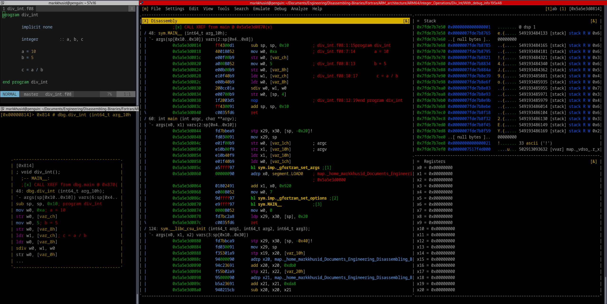

Fortran - ARM 64-Bit Platform - Divide Two Integers#
{kind=link}
Introduction#
In this section we will be disassembling simple binaries generated by the Fortran high-level language compiled for the 64-bit ARM platform.
Project code for this section is contained in my markkhusid/Disassembling-Binaries.
The program div_int.f08#
program div_int
implicit none
integer :: a, b, c
a = 10
b = 5
c = a / b
end program div_int
The program displays the contents of the program div_int.f08. The program creates three integers: a, b, and c. a is assigned the value of 10, b is assigned the value of 2, and c is assigned the result of the operation a / b.
The program is obviously very simple, with no inputs and outputs. The idea is to generate the binary and look at the disassembly to learn about the workings of the 64-bit ARM processor platform.
The chosen test system is my trusty Samsung Chromebook Plus V2, which has a 64-bit ARMv8 processor. This is a very convenient platform for this exercise due to its availability and ease of access from multiple remote systems via SSH.
The program is compiled with the GNU Fortran compiler, gfortran, which is available on the ARM platform. The program is compiled with debugging information using the -ggdb3 option, which allows us to debug the program in GDB and see the source code interspersed with the assembly instructions.
The program is compiled with:
$ gfortran -ggdb3 div_int.f08 -o div_int_Fortran_aarch64_ggdb3
For general edification, we also have gfortran produce generic assembly with the -S option, an object file with the -o option, and object dumps of the object and executable files.
The generic assembly is generated by using the -S (assembly) option:
$ gfortran -S -ggdb3 div_int.f08 -o div_int.s
The object file is generated by using the -c (compile) option:
$ gfortran -c -ggdb3 div_int.s -o div_int.o
The objdump files are generated by using the following command and options:
$ objdump -x -D -S -s -g -t div_int.o > objdump_of_dot_o.txt
$ objdump -x -D -S -s -g -t div_int_Fortran_aarch64_ggdb3 > objdump_of_dot_exe.txt
A rundown of the objdump options is shown here:
$objdump
Usage: objdump <option(s)> <file(s)>
Display information from object <file(s)>.
At least one of the following switches must be given:
-a, --archive-headers Display archive header information
-f, --file-headers Display the contents of the overall file header
-p, --private-headers Display object format specific file header contents
-P, --private=OPT,OPT... Display object format specific contents
-h, --[section-]headers Display the contents of the section headers
-x, --all-headers Display the contents of all headers
-d, --disassemble Display assembler contents of executable sections
-D, --disassemble-all Display assembler contents of all sections
--disassemble=<sym> Display assembler contents from <sym>
-S, --source Intermix source code with disassembly
--source-comment[=<txt>] Prefix lines of source code with <txt>
-s, --full-contents Display the full contents of all sections requested
-g, --debugging Display debug information in object file
-e, --debugging-tags Display debug information using ctags style
-G, --stabs Display (in raw form) any STABS info in the file
-W, --dwarf[a/=abbrev, A/=addr, r/=aranges, c/=cu_index, L/=decodedline,
f/=frames, F/=frames-interp, g/=gdb_index, i/=info, o/=loc,
m/=macro, p/=pubnames, t/=pubtypes, R/=Ranges, l/=rawline,
s/=str, O/=str-offsets, u/=trace_abbrev, T/=trace_aranges,
U/=trace_info]
Display the contents of DWARF debug sections
-Wk,--dwarf=links Display the contents of sections that link to
separate debuginfo files
-WK,--dwarf=follow-links
Follow links to separate debug info files (default)
-WN,--dwarf=no-follow-links
Do not follow links to separate debug info files
-L, --process-links Display the contents of non-debug sections in
separate debuginfo files. (Implies -WK)
--ctf[=SECTION] Display CTF info from SECTION, (default `.ctf')
--sframe[=SECTION] Display SFrame info from SECTION, (default '.sframe')
-t, --syms Display the contents of the symbol table(s)
-T, --dynamic-syms Display the contents of the dynamic symbol table
-r, --reloc Display the relocation entries in the file
-R, --dynamic-reloc Display the dynamic relocation entries in the file
@<file> Read options from <file>
-v, --version Display this program's version number
-i, --info List object formats and architectures supported
-H, --help Display this information
In our case, we want -x (all headers), -D (disassemble all), -S (display source code with assembly), -s (full contents of all sections), -g (debug info), and finally, -t (display contents of the symbol tables).
We will now disassemble this program on the 64-bit ARM platform and step through the assembly instructions.
Disassembling div_int_Fortran_aarch64_ggdb3#
When we look at the executable’s objdump, we notice that there are two functions of interest, one is main, and the other is MAIN__. The Fortran compiler sets up the program arguments and options in main, while the actual program is contained within MAIN__ (that is capital MAIN followed by two underscores).
The following text from the executable’s objdump illustrates this:
Disassembly of section .text:
0000000000000814 <MAIN__>:
program div_int
814: d10043ff sub sp, sp, #0x10
implicit none
integer :: a, b, c
a = 10
818: 52800140 mov w0, #0xa // #10
81c: b9000fe0 str w0, [sp, #12]
b = 5
820: 528000a0 mov w0, #0x5 // #5
824: b9000be0 str w0, [sp, #8]
c = a / b
828: b9400fe1 ldr w1, [sp, #12]
82c: b9400be0 ldr w0, [sp, #8]
830: 1ac00c20 sdiv w0, w1, w0
834: b90007e0 str w0, [sp, #4]
end program div_int
838: d503201f nop
83c: 910043ff add sp, sp, #0x10
840: d65f03c0 ret
0000000000000844 <main>:
844: a9be7bfd stp x29, x30, [sp, #-32]!
848: 910003fd mov x29, sp
84c: b9001fe0 str w0, [sp, #28]
850: f9000be1 str x1, [sp, #16]
854: f9400be1 ldr x1, [sp, #16]
858: b9401fe0 ldr w0, [sp, #28]
85c: 97ffffa5 bl 6f0 <_gfortran_set_args@plt>
860: 90000000 adrp x0, 0 <_init-0x660>
864: 91248001 add x1, x0, #0x920
868: 528000e0 mov w0, #0x7 // #7
86c: 97ffff9d bl 6e0 <_gfortran_set_options@plt>
870: 97ffffe9 bl 814 <MAIN__>
874: 52800000 mov w0, #0x0 // #0
878: a8c27bfd ldp x29, x30, [sp], #32
87c: d65f03c0 ret
Explaining the Dissassembly by ChatGPT 4o#
This is the AArch64 (64-bit ARM) disassembly of a simple Fortran program that performs integer division. The compiler has translated the Fortran code into assembly with associated runtime setup.
🔷 High-Level Fortran Code#
Here’s the original Fortran code that the assembly represents:
program div_int
implicit none
integer :: a, b, c
a = 10
b = 5
c = a / b
end program div_int
🔧 DISASSEMBLY ANALYSIS#
Function: MAIN__ (Entry point for Fortran program)#
0000000000000814 <MAIN__>:
1. Function Prologue: Allocate Stack Space#
814: d10043ff sub sp, sp, #0x10
Allocates 16 bytes on the stack for local variables
a,b, andc.Stack grows downward, so
spis decremented.
2. Initialize a = 10#
818: 52800140 mov w0, #0xa // w0 = 10
81c: b9000fe0 str w0, [sp, #12] // store `a` at sp+12
w0is loaded with the immediate value10.Stored to stack offset
+12, which is reserved fora.
3. Initialize b = 5#
820: 528000a0 mov w0, #0x5 // w0 = 5
824: b9000be0 str w0, [sp, #8] // store `b` at sp+8
w0= 5Stored at
sp+8as variableb.
4. Compute c = a / b#
828: b9400fe1 ldr w1, [sp, #12] // load `a` into w1
82c: b9400be0 ldr w0, [sp, #8] // load `b` into w0
830: 1ac00c20 sdiv w0, w1, w0 // w0 = w1 / w0 → a / b
834: b90007e0 str w0, [sp, #4] // store `c` at sp+4
Loads
aandbinto registers.Performs signed integer division (
sdiv), stores result (2) inw0.Stores result to stack at offset
+4(reserved forc).
5. Function Epilogue: Cleanup and Return#
838: d503201f nop // no operation
83c: 910043ff add sp, sp, #0x10 // restore original stack pointer
840: d65f03c0 ret // return
Stack pointer restored to pre-function state.
Function returns to caller.
Function: main (Startup entry point for the whole program)#
0000000000000844 <main>:
This is the C-style entry point that initializes the Fortran runtime and calls MAIN__.
1. Function Prologue: Stack Frame Setup#
844: a9be7bfd stp x29, x30, [sp, #-32]! // push frame pointer and return address
848: 910003fd mov x29, sp // set frame pointer
Standard ARM64 function prologue
Reserves space for local variables and stores
x29(frame pointer) andx30(return address)
2. Save argc and argv#
84c: b9001fe0 str w0, [sp, #28] // argc
850: f9000be1 str x1, [sp, #16] // argv
w0andx1hold theargcandargvpassed intomain.
3. Initialize Fortran Runtime#
854: f9400be1 ldr x1, [sp, #16] // load argv
858: b9401fe0 ldr w0, [sp, #28] // load argc
85c: 97ffffa5 bl 6f0 <_gfortran_set_args@plt>
Call
_gfortran_set_args(argc, argv)to pass arguments to the Fortran runtime.
4. Configure Runtime Options#
860: 90000000 adrp x0, 0 <_init-0x660> // get page address (base of .rodata or symbol region)
864: 91248001 add x1, x0, #0x920 // x1 = x0 + 0x920
868: 528000e0 mov w0, #0x7 // runtime options bitmask
86c: 97ffff9d bl 6e0 <_gfortran_set_options@plt>
Configures the Fortran runtime behavior.
The values suggest setting I/O or floating-point behavior.
5. Call Fortran Program Logic#
870: 97ffffe9 bl 814 <MAIN__>
Call
MAIN__, which contains the actual logic (a = 10; b = 5; c = a / b)
6. Return from Main#
874: 52800000 mov w0, #0x0 // return code 0
878: a8c27bfd ldp x29, x30, [sp], #32 // restore frame and return address
87c: d65f03c0 ret
Sets exit code to 0
Restores stack and frame pointers
Returns to OS
🔠Stack Layout in MAIN__#
Offset |
Variable |
Description |
|---|---|---|
+12 |
|
10 |
+8 |
|
5 |
+4 |
|
|
✅ Summary#
This disassembly corresponds to a minimal Fortran program that:
Allocates stack space
Initializes two integers (
a = 10,b = 5)Computes their integer quotient
c = a / busing ARM64sdivStores the result to stack
Sets up the Fortran runtime environment via
mainReturns cleanly to the OS
Let me know if you’d like the equivalent C version, annotated binary layout, or memory map!
Explaining the Disassembly by Grok 4#
Overview of the Disassembly#
This disassembly shows the machine code for a simple Fortran program compiled for the AArch64 (ARM64) architecture, likely using gfortran (GNU Fortran compiler). The Fortran source, embedded in the disassembly, is a program named “div_int†that declares three integers (a, b, c), assigns a = 10 and b = 5, computes c = a / b (integer division, resulting in 2), and ends without any output or I/O. It’s essentially a trivial computation with no side effects.
The code is split into two functions:
<MAIN__>: The mangled name for the Fortran main program body. It handles variable allocation, assignments, the division, and cleanup.<main>: The actual entry point, generated by the compiler for runtime setup. It interfaces with the GNU Fortran runtime library (libgfortran) to handle command-line arguments and options, calls<MAIN__>, and exits.
The code uses stack storage for variables (no register optimization, suggesting unoptimized compilation like -O0). Instructions include hexadecimal offsets, opcodes, mnemonics, and operands. Some calls use the Procedure Linkage Table (PLT) for dynamic linking to external functions (e.g., from libgfortran). Relocations or PLT stubs (like @plt) indicate linker-resolved addresses.
AArch64 conventions: 64-bit registers (x0-x31), 32-bit views (w0-w31), stack pointer (sp) grows downward, little-endian memory. Integers are 32-bit (4 bytes each), so stack slots are 4 bytes.
I’ll break it down instruction-by-instruction, linking to the Fortran source.
Detailed Explanation of <MAIN__> (Offset 0x0000000000000814)#
This is the core of the Fortran program. It allocates 16 bytes on the stack (for a, b, c plus alignment padding), assigns values, performs signed integer division, stores the result, and deallocates before returning.
814: d10043ff sub sp, sp, #0x10
Subtract 0x10 (16 decimal) from sp to allocate stack space. This reserves room for three 4-byte integers (12 bytes) plus 4 bytes for 16-byte alignment (AArch64 ABI mandates this). Corresponds to enteringprogram div_intand declaring variables.818: 52800140 mov w0, #0xa
Move immediate 0xa (10 decimal) into w0 (32-bit register). Preparesa = 10.81c: b9000fe0 str w0, [sp, #12]
Store w0 (10) to memory at [sp + 12]. Assigns toa(stack offset 12).820: 528000a0 mov w0, #0x5
Move 0x5 (5) into w0. Preparesb = 5.824: b9000be0 str w0, [sp, #8]
Store w0 (5) to [sp + 8]. Assigns tob(offset 8).828: b9400fe1 ldr w1, [sp, #12]
Load [sp + 12] (a= 10) into w1. Loads first operand forc = a / b.82c: b9400be0 ldr w0, [sp, #8]
Load [sp + 8] (b= 5) into w0. Now w1 = a, w0 = b.830: 1ac00c20 sdiv w0, w1, w0
Signed divide w1 (a) by w0 (b), store quotient in w0. Computes 10 / 5 = 2 (integer division; remainder discarded).sdivis for signed integers (Fortran integers are signed). If b=0, this would trap (division by zero), but here b=5.834: b90007e0 str w0, [sp, #4]
Store w0 (2) to [sp + 4]. Assigns toc(offset 4).838: d503201f nop
No operation. Compiler-inserted padding for alignment or to separate code sections. Marks end of computation beforeend program div_int.83c: 910043ff add sp, sp, #0x10
Add 0x10 to sp, deallocating stack space. Cleans up variables.840: d65f03c0 ret
Return by jumping to address in x30 (link register, set by caller). Exits<MAIN__>.
Summary: <MAIN__> translates the Fortran directly—stack alloc, load constants, divide, store, dealloc. No optimizations; all via stack.
Detailed Explanation of <main> (Offset 0x0000000000000844)#
This is the program entry point, handling Fortran runtime initialization. It saves registers, passes args to libgfortran, sets options, calls <MAIN__>, and exits with status 0. Uses System V ABI (args in x0-x7, etc.).
844: a9be7bfd stp x29, x30, [sp, #-32]!
Store pair: Save x29 (frame pointer) and x30 (link register) to [sp - 32], then sp -= 32. Allocates 32 bytes and preserves caller registers (ABI compliance).848: 910003fd mov x29, sp
Set x29 to sp. Establishes frame pointer for debugging/unwinding.84c: b9001fe0 str w0, [sp, #28]
Store w0 (argc, command-line arg count from OS) to [sp + 28].850: f9000be1 str x1, [sp, #16]
Store x1 (argv, arg pointers) to [sp + 16]. Saves args.854: f9400be1 ldr x1, [sp, #16]
Load argv into x1 (prep for call).858: b9401fe0 ldr w0, [sp, #28]
Load argc into w0.85c: 97ffffa5 bl 6f0 _gfortran_set_args@plt
Branch with link to_gfortran_set_args@plt(PLT stub at 0x6f0). Calls libgfortran function with argc (w0) and argv (x1) to initialize Fortran args.@pltindicates dynamic linking via PLT (Procedure Linkage Table resolves at runtime).860: 90000000 adrp x0, 0 <_init-0x660>
Address relative page: Load page-aligned address (high 21 bits) of a data section into x0. Points to options data (likely in .rodata). The<_init-0x660>is a linker note; actual address resolved.864: 91248001 add x1, x0, #0x920
Add 0x920 (2336 decimal) to x0, store in x1. Completes pointer to options array.868: 528000e0 mov w0, #0x7
Move 0x7 (7) into w0. Likely option count or flags for_gfortran_set_options.86c: 97ffff9d bl 6e0 _gfortran_set_options@plt
Call_gfortran_set_options@plt(stub at 0x6e0) with count/flags (w0) and options pointer (x1). Sets runtime options (e.g., error handling, floating-point).870: 97ffffe9 bl 814 <MAIN__>
Call<MAIN__>(PC-relative backward branch to 0x814).874: 52800000 mov w0, #0x0
Move 0 into w0. Sets exit status (success).878: a8c27bfd ldp x29, x30, [sp], #32
Load pair: Restore x29 and x30 from [sp], then sp += 32. Stack cleanup.87c: d65f03c0 ret
Return to caller (OS/runtime), exiting with w0=0.
Summary: <main> bootstraps the Fortran environment via libgfortran, runs the program, and exits cleanly. PLT calls enable shared library use.